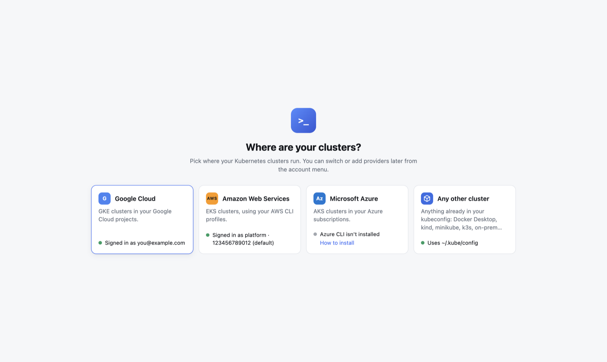
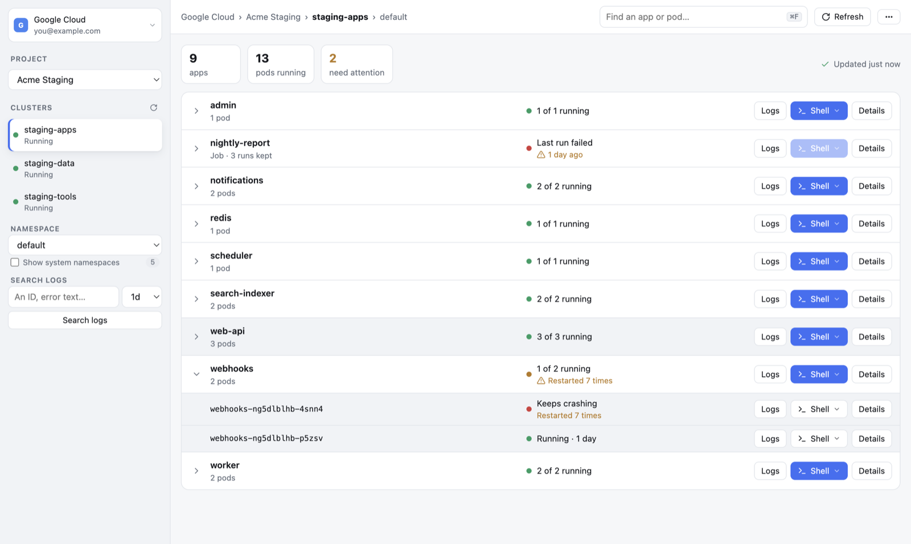

Kubernetes, without the kubectl.
Kube Console is a Mac app for everyday cluster work. Open a shell in an app, read its logs or check if it's healthy, with a click instead of a command. On GKE, EKS, AKS or any cluster in your kubeconfig.
For Macs with Apple silicon · Signed and notarized by Apple · Uses the logins you already have

Three steps to a shell.
No YAML, no contexts to remember, no copying pod names out of a terminal.
Choose where your clusters run
Google Cloud, AWS, Azure, or any cluster already in your kubeconfig: Docker Desktop, kind, minikube, k3s or on-prem.
Sign in with your own login
One button opens your provider's normal sign-in page. Kube Console uses gcloud, aws or az, so it never sees your password.
Click a cluster, then an app
Your apps appear with their health in plain words. Logs, details and shells are one click away.

See what's healthy at a glance.
Pods are grouped under the app they belong to, so a deployment with twelve replicas is one line, not twelve.
- Status in plain words. "3 of 3 running", "Keeps crashing", "Restarted 7 times", "Last run failed · 1 day ago".
- Scheduled jobs make sense. Every run of a CronJob is grouped, with the latest result up front.
- Copy any name in one click. App names and pod names, ready to paste into a ticket or chat.
- Find anything fast. Press ⌘F and type part of an app or pod name.

The everyday jobs, made easy.
Everything you'd normally piece together from kubectl, gcloud and a cloud console, in one window.
One-click shells
Bash, sh, Django shell or a database shell inside any pod. Add your own commands to the Shell menu.
Logs and details
The last 500 log lines with timestamps, filterable as you type, plus the full pod description.
Search across all logs
Paste an order ID or an error message and search a whole cluster's history in Google Cloud Logging.
Tabs that stay open
Shells and logs live in a panel that keeps them open while you switch apps or clusters. Each tab shows its cluster.
Any Kubernetes
GKE, EKS and AKS through their official CLIs, or anything kubectl can reach. Private GKE clusters connect through their DNS endpoint automatically.
Feels like a Mac app
Light and dark mode, ⌘K to clear, ⌘F to find, ⌘W to close a tab, Option-arrows in the terminal.
You'll always know when it's production.
Running the right command on the wrong cluster is the classic mistake. Kube Console makes it hard to make.
- Unmistakable. A red bar, a PRODUCTION label, red terminal tabs and "PRODUCTION" in the window title.
- Protected by default. Type the cluster's name before a shell opens on production.
- Read-only when you want it. Turn shells off for any cluster; only logs and details remain.
- Your rules. Mark any cluster as production, or match names like "prod" and "live" automatically.

Built not to keep you waiting.
Most of the time spent opening a cluster is waiting on connections, not data. Kube Console keeps one open per cluster, starts connecting when you hover, and shows the last list you saw while it refreshes.
Your clouds, your logins.
Kube Console signs in through each provider's official command-line tool, then talks to your clusters the same way kubectl does.
| Where your clusters run | Signs in with | Finds clusters by | Status |
|---|---|---|---|
| GGoogle Kubernetes Engine | gcloud | Project | Supported plus Cloud Logging search |
| Any kubeconfig | Credentials in the file | Kubeconfig file | Supported |
| AWSAmazon EKS | aws (profiles, SSO) | Region | Beta |
| AzAzure AKS | az (+ kubelogin) | Subscription | Beta |
Nothing leaves your Mac.
There's no Kube Console account and no Kube Console server. The app talks only to your clusters and your cloud providers.
No passwords
Signing in happens on your provider's own page through gcloud, aws or az. Kube Console never sees or stores your password.
No tracking
No analytics, no telemetry, no usage data. Your cluster names and app names stay on your machine.
Your access, unchanged
It can only do what your own cloud and Kubernetes permissions allow. The only change it makes on your Mac is adding a cluster to your kubeconfig when you first open it, as gcloud, aws or az would.
Questions, answered.
Which Kubernetes clusters does Kube Console work with?
Google Kubernetes Engine (GKE), Amazon EKS, Azure AKS, and any cluster you can reach with kubectl through a kubeconfig file, including Docker Desktop, kind, minikube, k3s and on-premises clusters.
Do I need to know kubectl?
No. You pick a cluster and click buttons for logs, details and shells. kubectl needs to be installed because Kube Console uses it for shells, but you never have to type a kubectl command.
Is it safe to use on production?
Production clusters are marked with a red bar and label. By default they're Protected: you type the cluster's name before a shell opens. You can also set any cluster to Read-only, which turns shells off entirely. What you can do is still decided by your own access on the cluster.
Does it store my passwords or cloud credentials?
No. It signs in through the official command-line tools you already use (gcloud, aws, az and kubectl) and never sees your password. It has no account, no server and sends no usage data.
How is it different from Lens or k9s?
Lens and k9s are full cluster managers aimed at Kubernetes specialists. Kube Console focuses on the everyday jobs a whole team does, such as opening a shell in an app, reading its logs and checking whether it's healthy, with plain language and production guard rails.
Does it run on Windows or Linux?
Not yet. Kube Console currently runs on Macs with Apple silicon.
How do I install it?
Download Kube Console, open the disk image and drag Kube Console to Applications. It's signed with a Developer ID and notarized by Apple, so it opens with a normal double-click.
Stop typing kubectl for everything.
Shells, logs and app health for your whole team, with production guard rails built in.